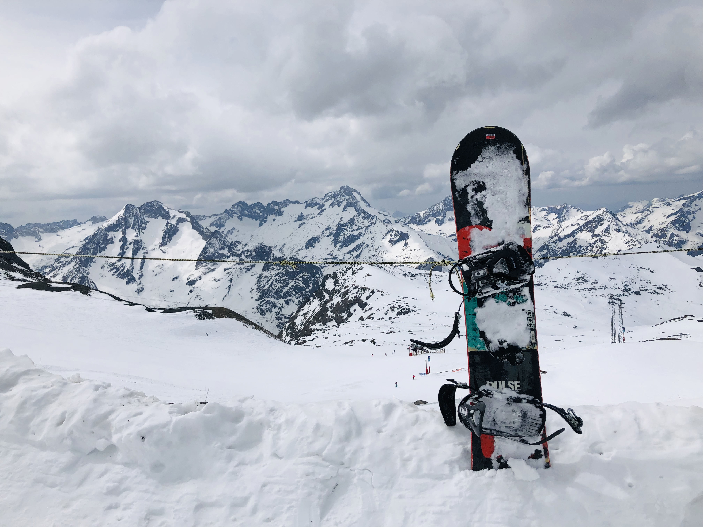
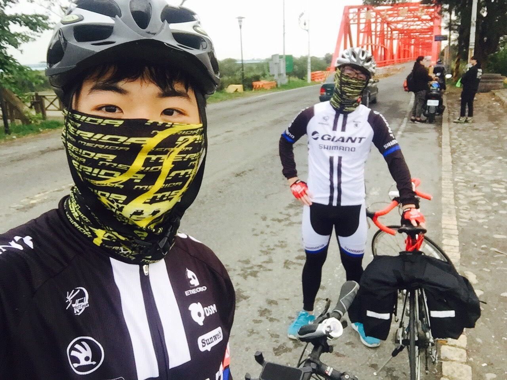
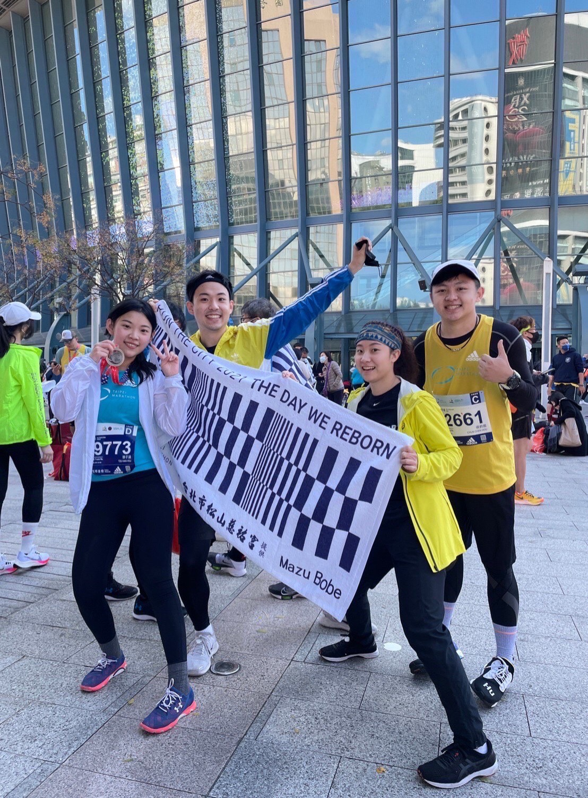
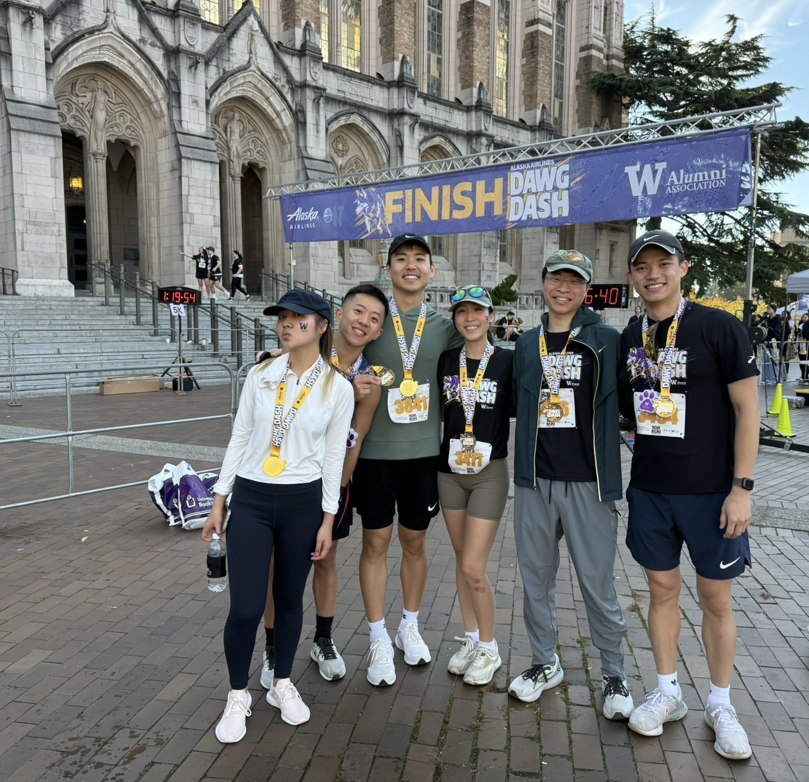

Falling with Style: How Snowboarding Taught Me to Embrace the Slips During my university exchange in Nice, France, I had my first encounter with snowboarding. The real adventure, though, started on the slopes. As a beginner, I accidentally found myself on a blue run. Let’s just say my descent was less ‘carving turns’ and more ‘creative falling.’ Somewhere along the way, my phone slipped out of my pocket and vanished into the snow. Surprisingly, my phone reached the Lost and Found before I reached the bottom. If there’s a lesson here, it’s that sometimes you just have to go with the fall—your phone might even be waiting for you at the end.
Cycling around Taiwan in just nine days is, without a doubt, the craziest thing I've ever done. With my university friends, we pedaled through towns, mountains, and along the coastline, experiencing the island's warmth and beauty up close. One of the most unforgettable moments were the time when we were completely exhausted and struggling to keep going, a kind driver pulled over to offer us food. That simple act of generosity reminded me how powerful small gestures can be. This journey wasn't just about endurance—it was about connecting with the land and its people, and discovering strength I didn't know I had. I'm excited to continue my cycling adventures in Seattle and beyond, exploring new routes and chasing new challenges, one ride at a time.
Running from Excuses: How Marathons Keep Me Moving (Even When I Don’t Want To) I'm not someone who enjoys running, yet I regularly sign up for marathons. Despite often skipping workouts due to exhaustion or excuses, committing to races helps push me to stay active. Plus, running alongside friends makes the experience so much better.
 I've completed five half-marathons so far, and what I truly enjoy isn't just crossing the finish line, but the sense of discipline and accomplishment that comes with it. There's something rewarding about pushing through the struggle, one step at a time, and realizing you're stronger than you thought.
 Right now, I’m in Seattle, pursuing my Master’s in Supply Chain Management at the University of Washington.
Life here strikes a perfect balance between vibrant city living and breathtaking natural beauty, allowing me to explore countless opportunities both inside and outside the classroom.
Whether it’s analyzing complex data sets for class projects, attending engaging networking events with industry leaders, or simply enjoying a hike through the lush trails of the Pacific Northwest, my experience here has been enriching on many levels.
Being immersed in this dynamic environment continuously inspires me to grow professionally and personally, broadening my perspectives and sharpening my skills in preparation for the next chapter of my career.
This journey wasn't just about endurance—it was about connecting with the land and its people, and discovering strength I didn't know I had. I'm excited to continue my cycling adventures in Seattle and beyond, exploring new routes and chasing new challenges, one ride at a time.
Right now, I’m in Seattle, pursuing my Master’s in Supply Chain Management at the University of Washington.
Life here strikes a perfect balance between vibrant city living and breathtaking natural beauty, allowing me to explore countless opportunities both inside and outside the classroom.
Whether it’s analyzing complex data sets for class projects, attending engaging networking events with industry leaders, or simply enjoying a hike through the lush trails of the Pacific Northwest, my experience here has been enriching on many levels.
Being immersed in this dynamic environment continuously inspires me to grow professionally and personally, broadening my perspectives and sharpening my skills in preparation for the next chapter of my career.
This journey wasn't just about endurance—it was about connecting with the land and its people, and discovering strength I didn't know I had. I'm excited to continue my cycling adventures in Seattle and beyond, exploring new routes and chasing new challenges, one ride at a time.
I love capturing life's best moments.
Falling for Fall: Why Seattle’s Autumn Has My Heart


Framing My Favorite: Capturing the Heart of Japan Through My Lens
Also a Human Obsessed with Dogs and Good Vibes!
- © HaoTung